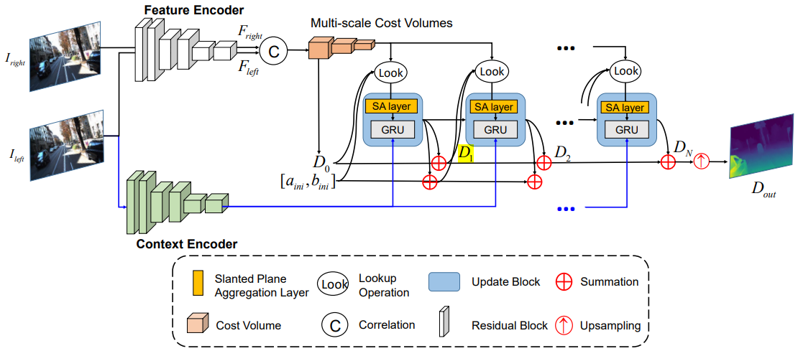

| |||
|  |
Yun Wang, Longguang Wang , Hanyun Wang, Yulan Guo IEEE Robotics and Automation Letters, 2022 We proposed a differentiable slanted plane aggregation layer for stereo matching. Our slanted plane aggregation strategy can adaptively aggregate matching costs from a learnable slanted plane rather than the full 3D space. |